| 種類：柴、毛色：赤、毛種：短毛、 誕生日：２０１４年９月２６日、メス。 名前は「うみ」となりました。 体長：約３９センチ、体重：2000ｇ |
ペットとなった日は、２０１４年１１月２４日。 生後１ヶ月と２８日。 |
| ２０１４年１１月２４日。 生後１ヶ月と２８日。 |
２０１４年１１月２４日。 生後１ヶ月と２８日。 |
| ２０１４年１１月２４日。 生後１ヶ月と２８日。 |
２０１４年１１月２４日。 生後１ヶ月と２８日。 |
| 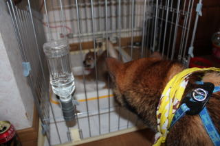 | |
| ２０１４年１１月２４日。 生後１ヶ月と２８日。 |
２０１４年１１月２４日。 生後１ヶ月と２８日。 |
| ２０１４年１１月２９日。 生後２ヶ月 |
２０１４年１１月２９日。 生後２ヶ月 |
| ２０１４年１２月４日。 生後２ヶ月 |
２０１４年１２月５日。 生後２ヶ月 |
| 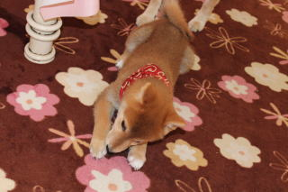 | 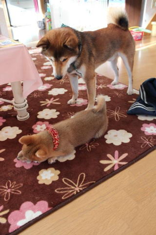 |
| ２０１４年１２月１３日。 生後２ヶ月 |
２０１４年１２月１３日。 生後２ヶ月 |
| ２０１４年１２月１４日。 生後２ヶ月 |
２０１４年１２月１４日。 生後２ヶ月 |
| ２０１４年１２月２６日。 生後２ヶ月 |
|
| ２０１４年１２月２９日。 生後３ヶ月 |
２０１４年１２月２９日。 生後３ヶ月 |
| ２０１４年１２月２９日。 生後３ヶ月 |
２０１４年１２月２９日。 生後３ヶ月 |
| 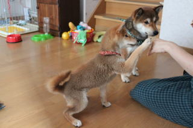 | |
| ２０１５年１月１０日 お手ができるようになった 生後４ヶ月 |
２０１５年１月１８日 ハイタッチができるようになった 生後４ヶ月 |
| ２０１５年１月２６日 生後４ヶ月 |
２０１５年２月１日 生後５ヶ月 |
| ２０１５年３月１日 毛が生え変わった 生後６ヶ月 |
２０１５年３月１日 生後６ヶ月 |
| 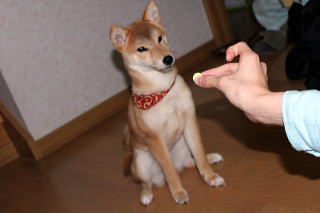 | |
| ２０１５年３月１日 生後６ヶ月 |
２０１５年３月１日 「待て」を覚えた 生後６ヶ月 |
| ２０１５年３月２９日 生後６ヶ月 |
２０１５年４月２５日 生後７ヶ月 |
| 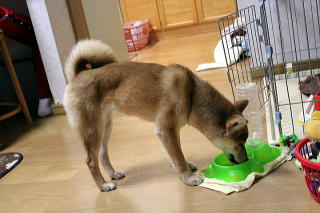 | 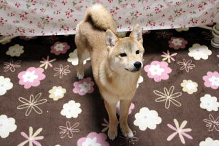 |
| ２０１５年４月２５日 生後７ヶ月 |
２０１５年４月２５日 生後７ヶ月 |
| ２０１５年４月２５日 生後７ヶ月 |
２０１５年４月２５日 生後７ヶ月 |
| ２０１５年４月２５日 生後７ヶ月 |
２０１５年５月２４日 胴輪を付ける 生後８ヶ月 |
| 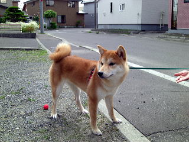 | 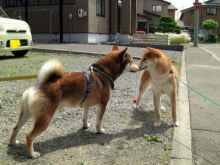 |
| ２０１５年６月２０日 初めて外を歩く 生後９ヶ月 |
２０１５年６月２０日 初めて外を歩く 生後９ヶ月 |
| ２０１５年７月２０日 初めて道の駅で散歩 生後１０ヶ月 |
２０１５年７月２０日 初めて道の駅で散歩 生後１０ヶ月 |
| ２０１５年７月２０日 初めて道の駅で散歩 生後１０ヶ月 |
２０１５年７月２０日 初めて道の駅で散歩 生後１０ヶ月 |
| ２０１５年８月６日 生後１０ヶ月 |
２０１５年９月５日 多和平 生後１１ヶ月 |
| ２０１５年９月２６日 １歳誕生日 |
２０１５年９月２６日 １歳誕生日 |
| ２０１５年９月２６日 １歳誕生日 |
２０１５年１０月２０日 生後１歳１ヶ月 |
| 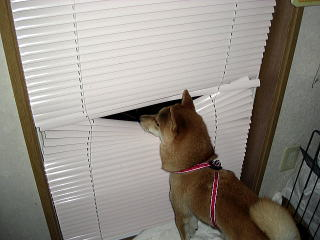 | |
| ２０１５年１１月９日 生後１歳２ヶ月 |
２０１５年１１月１４日 生後１歳２ヶ月 |
| 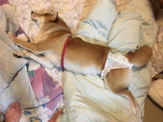 | |
| ２０１６年１月２８日 生後１歳４ヶ月 |
２０１６年３月５日 生後１歳５ヶ月 |
| ２０１６年３月５日 生後１歳５ヶ月 |
２０１６年３月３０日 生後１歳６ヶ月 |
| ２０１６年４月１日 生後１歳６ヶ月 |
２０１６年５月２日 相生道の駅 生後１歳８ヶ月 |
| ２０１６年５月５日 多和平 生後１歳８ヶ月 |
２０１６年８月１２日 あやめヶ原（原生花園） 生後１歳１１ヶ月 |
| ２０１６年８月１２日 あやめヶ原（原生花園） 生後１歳１１ヶ月 |
２０１６年８月１２日 あやめヶ原（原生花園） 生後１歳１１ヶ月 |
| ２０１６年９月２５日 生後１歳１１ヶ月 |
２０１６年１０月１６日 生後２歳１ヶ月 |
| ２０１６年１１月５日 生後２歳２ヶ月 皮膚の調子が悪く病院へ行く。 |
２０１６年１１月５日 生後２歳２ヶ月 |
| ２０１６年１１月１８日 生後２歳２ヶ月 |
２０１６年１１月１８日 生後２歳２ヶ月 |
| ２０１６年１２月２４日 生後２歳３ヶ月 |
２０１６年１２月２４日 生後２歳３ヶ月 |
| ２０１６年１２月２４日 生後２歳３ヶ月 |
２０１６年１２月２４日 生後２歳３ヶ月 |
| ２０１７年１月９日 生後２歳３ヶ月 |
２０１７年２月２６日 生後２歳５ヶ月 |
| ２０１７年２月２６日 生後２歳５ヶ月 |
２０１７年４月２４日 生後２歳７ヶ月 |
| ２０１７年５月２８日 生後２歳８ヶ月 |
２０１７年５月２８日 生後２歳８ヶ月 |
 |
|
| ２０１７年１２月２４日 生後３歳３ヶ月 |
２０１７年１２月２４日 生後３歳３ヶ月 |